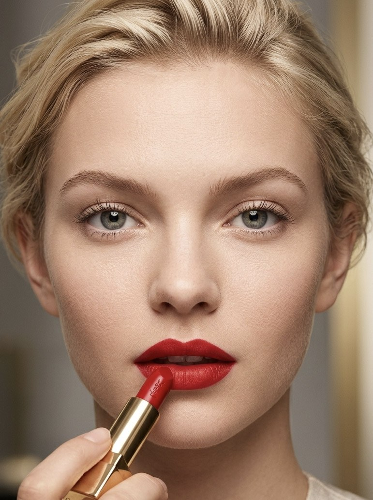
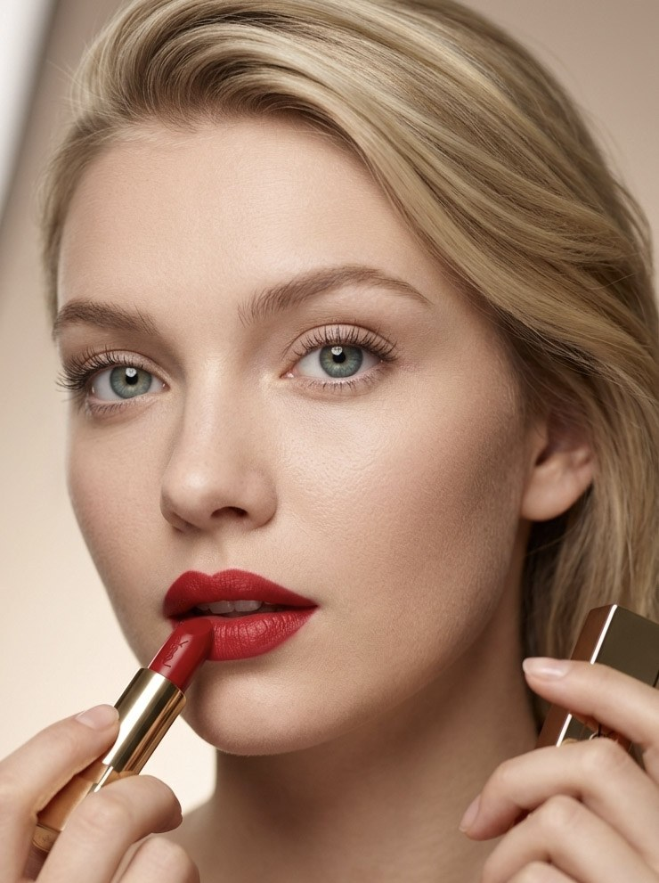

The opening sequence introduces the campaign through a single recurring element: red. Present from the very first frame, it becomes part of the atmosphere rather than the focal point. Instead of relying on a traditional beauty close-up, the lipstick is woven into a broader visual narrative, where colour, styling, and location carry equal weight.
Red moves beyond the lipstick. Repeated throughout the landscape, it becomes a visual thread that connects the campaign—from nature to product, without separating one from the other.
The product moves to the forefront while remaining connected to the visual world built around it. Light, reflections, and surrounding surfaces continue to shape the image, allowing the lipstick to feel like a natural extension of the environment rather than an isolated object.
The dialogue between colour and material becomes more apparent. Changing light and perspective reveal the contrast between the red pigment and the gold finish, allowing both to contribute equally to the final image.
The visual direction shifts towards an editorial approach. Each image is conceived as a standalone editorial page, where the relationship between the model and the product becomes the only visual priority.


The focus shifts towards the complete beauty look. Product, styling, and expression come together as a single composition, allowing the lipstick to be experienced as part of a fully realised beauty image.